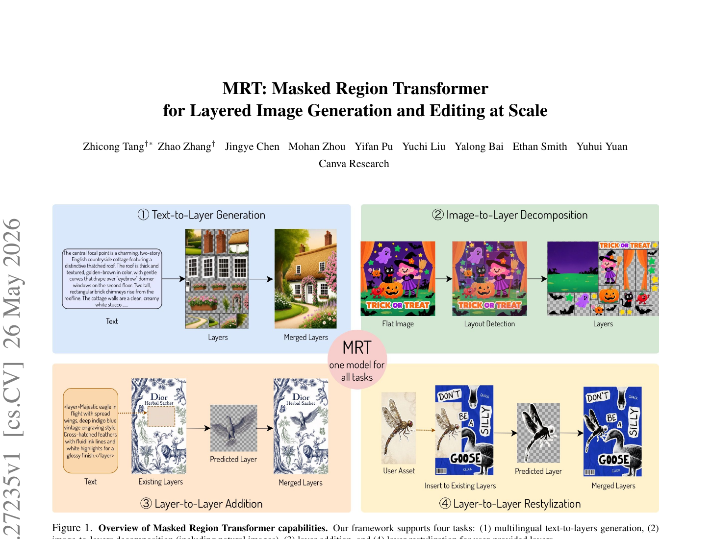
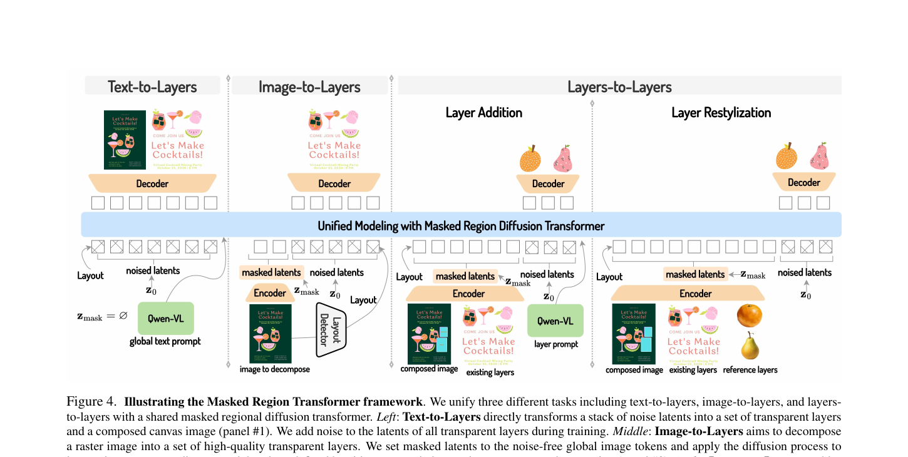
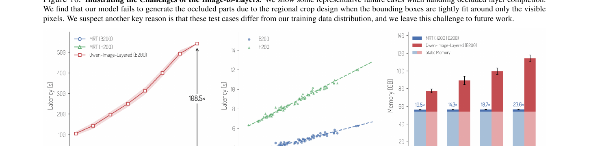
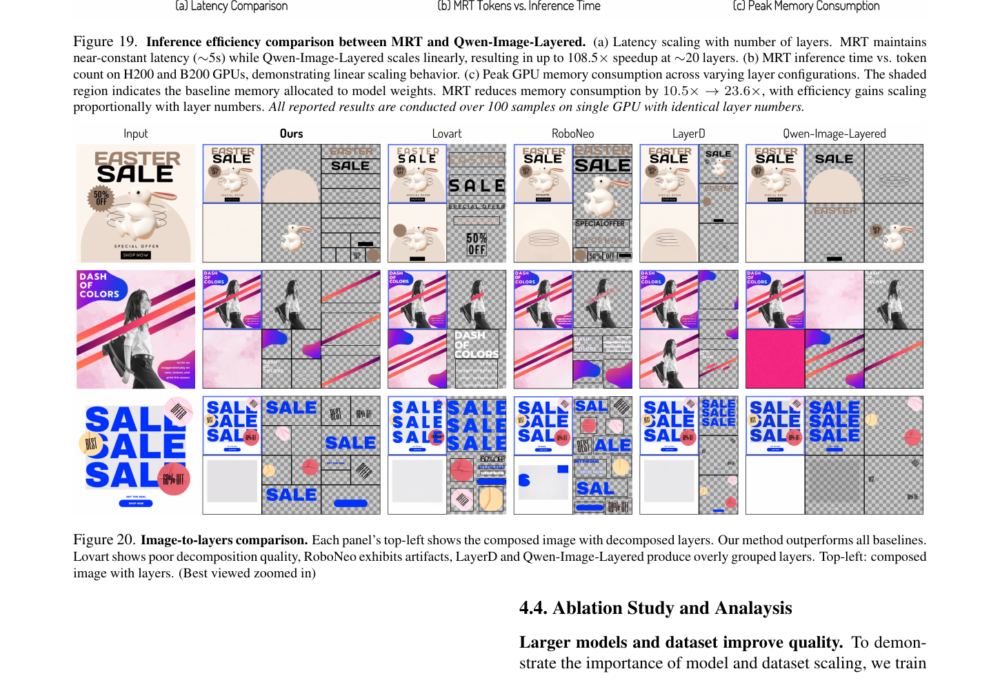
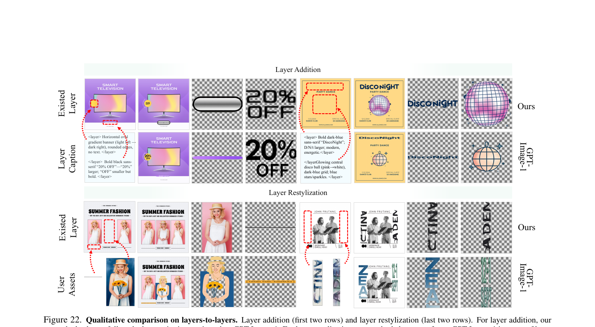
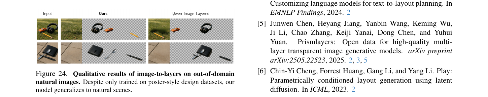

MRT: 一个 20B masked region transformer 把分层图生成的三个任务塞进同一个模型

1. 出发点 (Motivation)
文生图模型(Qwen-Image / SD3 / FLUX 这些)主要生成的是flat raster image——一张已经合成好的位图。问题:用户在 Canva/Figma/Photoshop 里实际需要的是分层 PSD——每个元素一层 RGBA,可拖动、可换色、可重排。"先生成位图,再用分割模型抠出来当成层"这条路两个硬伤:
- 分割模型只能给可见像素,遮挡部分(被其他对象挡住的区域)没法补全 → 层一旦移动就露馅
- 超出画布边界的元素(比如 banner 一半在框外),裁剪后再也拼不回完整对象
所以这个领域近一两年有几条思路:
- 顺序生成(LayerDiffuse / COLE):一层一层地按顺序画,慢且容易累积误差
- 同时生成(ART [38] / PrismLayers):一次性把所有层吐出来,但 ART 只能 LoRA 微调小模型,数据规模也小(< 1M 样本)
- 同期 Qwen-Image-Layered(2025/12):基于 Qwen-Image 全参微调,但每层用全画布 token 数表示(K 层 = K× token),20 层时显存爆掉
MRT 想一次性解决:
- 数据规模拉到 10M(来自 Canva 平台的专业设计师作品,~43M unique layers,带版权)
- 不只支持生成,还支持编辑:image→layers 分解 + layers→layers 添加/改样式
- regional latents(承袭 ART):每层只用自己的边界框 token,K 层 token 数 ≈ 1 层的 1-2 倍而非 K×
- overflow-aware canvas layer:专门画"完整 layer 含超出边界部分",编辑时元素能完整搬移
- 同一个 20B Qwen-Image backbone 全参数微调 + DMD2 蒸馏到 8 步
一句话主张:用大模型 + 大数据 + 单一架构 + adaptive masking,把分层生成做到 Photoshop 级别。
2. 方法 (Method)
2.0 具体输入输出 + Layout 如何进模型 (这节最重要)
抽象描述读完容易问"具体什么张量进、什么张量出、layout 怎么喂"。一次说清:
Layout 进模型的方式 = 2D RoPE 位置编码,没有别的。Paper §3.2 只在一句话里带过("we copy the RoPE positional encoding from the corresponding original layer token..."),但这是核心机制:
- 没有单独的 "bbox 条件向量"(MultiDiffusion / GLIGEN 那种学一个 region embedding 的做法不存在)
- 没有 layout token(LayoutGPT 那种把 bbox 序列化成离散 token 的做法也没有)
- 就是 RoPE:每个 layer 的 latent token 拿到的 (x, y) 位置编码 = 该 layer 在全画布上的位置
举例:画布 1024×1024,Layer i 的 bbox = (200, 300, 600, 700)。该 layer 经 WAN-VAE 编码后得到一个 50×50 的 latent grid(下采样 8 倍)。这 50×50 个 token 的 RoPE 2D 位置就分别是 (25, 37.5), (26, 37.5), ..., (74, 87.5) —— 对应全画布坐标系, 不是 layer 内部的 (0,0)..(50,50)。Transformer 在 full-attention 中自然就能看到 "这个 layer token 跟 composed image 哪个像素位置对齐"。
以 Image-to-Layers 为例走一遍张量
输入 (用户给):
- 输入图 \(I \in \mathbb{R}^{3 \times 1024 \times 1024}\)
- Layout: \(K\) 个 bbox + Z-order (detector 抠出来或手标)
- (可选) 文本 prompt
编码阶段:
z_composed = WAN-VAE(I) # shape [16, 128, 128] (latent dim 16, 下采样 8×)
# 16384 token, RoPE 位置 = 全画布 (i, j)
z_bg = noise # shape [16, 128, 128], 全画布 latent (待去噪)
z_i^fg = noise (i=1..K) # shape [16, H_i/8, W_i/8], bbox 大小 latent (待去噪)
# 这些 token 的 RoPE 位置 = bbox 在全画布上的坐标
拼成一长串 token 序列 (一维序列, 不是空间张量):
[ z_composed (mask=CLEAN_CONDITION), # 16384 token; 不加噪、不算 loss
z_bg (mask=NOISY_TARGET), # 16384 token; 加噪 → 预测 velocity → 算 loss
z_1^fg (mask=NOISY_TARGET), # ~3-5k token (按 bbox 大小)
...
z_K^fg (mask=NOISY_TARGET) ]
总 token 数 ≈ 16384 (composed) + 16384 (bg) + \(\sum_i\) (bbox\(_i\) 面积/64)。关键: K 层加起来的 fg token 数大致等于一张全画布(K 个 bbox 拼起来约覆盖画布一次),所以总 token ≈ 3× 全画布。Qwen-Image-Layered 用全画布表示每层,总 token = (K+2)× 全画布——20 层时差 ~10× token,这是 Fig. 19 100× 推理加速的根因。
Transformer:20B Qwen-Image,60 层,全 token full attention(都互相看)。mask 只控制"这个 token 要不要加噪 / 要不要算 loss",不限制 attention 谁能看谁。
采样:Flow matching Euler 50 步(或蒸馏 8 步)。每步:
v_pred = transformer(z_t, t, c_text, mask, RoPE_positions)
z_{t-Δt} = z_t - v_pred * Δt # 仅更新 noisy 部分,clean condition token 不动
解码:
output_bg = WAN-VAE-decode(z_bg_final) # 全画布 RGBA
output_fg_i = WAN-VAE-decode(z_i^fg_final) # 每层 bbox 大小 RGBA,带 alpha 通道
输出 (给用户):
- 1 张 background RGBA (全画布尺寸)
- \(K\) 张 foreground RGBA,每张是自己 bbox 大小 (含 alpha,可独立移动)
- canvas layer = 输入图 (作为参考)
四个任务对照表
输入张量结构、输出张量结构、transformer 架构、loss 完全一致。只有 mask 模式不同:
| Task | composed | bg | fg layers | 文本 \(c\) | 用户额外输入 |
|---|---|---|---|---|---|
| Text→Layers | NOISY (生成) | NOISY | 全部 NOISY | 全局 prompt | 无 |
| Image→Layers | CLEAN (条件) | NOISY | 全部 NOISY | (可选) | 输入图 + layout |
| Layer Addition | CLEAN | CLEAN | \(i \notin A\) CLEAN,\(i \in A\) NOISY | <layer>$c_A$</layer> |
现有 design + bbox |
| Layer Restylization | CLEAN | CLEAN | non-target CLEAN; target NOISY; + append \(z_i^{\text{cond}}\) as CLEAN | "Harmonize these layers" | 现有 design + 用户图 |
Restylization 的小 trick: 用户上传的图也被 WAN 编码成额外 token,append 到 sequence 末尾,RoPE 位置复制 target layer 的 RoPE —— 让模型知道"这张用户图要替换 target layer 在那个位置的样子"。这就是 paper §3.2 末段说的 "copy RoPE positional encoding" 的实际作用。
2.1 数据表示: regional latents + overflow canvas
把一个多层设计表示为四类内容:
—— 翻译: 一个完整设计 = 1 张画布合成图(用于 layer coherence 监督) + 1 张半透明背景 + K 张前景 RGBA 层(可以超出画布)。每张都用 WAN-2.1-VAE 独立编码成 latent。
关键: token 数是按 region 算的。如果第 i 层的边界框是 100×200(占画布的 10% 面积),则该层的 token 数 ≈ 全画布 token 数 × 10%。这跟 Qwen-Image-Layered "每层用全画布 token"对比,K 层时 token 总数差 K 倍。这是论文 Fig. 19 显示 100× 推理速度的根本原因。
Overflow canvas layer:训练数据里 60% 的层会有超出画布的部分(比如 banner 拉到画框外)。MRT 引入一个全尺寸 canvas layer 专门承载这些"完整层 + 超出部分",其余 layer 仍按各自 region 编码。这样每个 fg layer 都能完整保留,后续编辑时拖动不丢内容。
2.2 Masked Region Transformer: 用 mask 切换任务
这是 paper 最核心的设计。三个任务(text→layers / image→layers / layers→layers)共用同一个 20B transformer,通过控制 "哪些 token 被 mask 当作干净条件、哪些 token 加噪做 diffusion 目标" 来切换任务。

z_mask(干净不加噪),layer latents 加噪去噪(分解);
Layers-to-Layers Addition: 已有 layer 作为z_mask,新增 layer 加噪去噪(条件生成);
Layers-to-Layers Restylization: 已有 layer + 用户上传的图作为z_mask,目标 layer 加噪去噪(风格迁移)。所有 mask token 和 noise token 在 transformer 内做 full attention。
记 \(z_0 = [z_{\text{composed}}; z_{\text{bg}}; z_1^{\text{fg}}; \ldots; z_K^{\text{fg}}]\) 为所有 latent token 的拼接,\(\epsilon \sim \mathcal{N}(0, I)\) 为噪声。Flow matching 标准的线性插值前向:
—— 翻译: 时刻 t (∈ [0, 1]) 时,latent 是干净的 $z_0$ 和纯噪声 $\epsilon$ 的线性插值。这跟 SD3 / FLUX / flow-opd-2026 / diffusion-opd-2026 全是同一套 rectified flow 框架。
Adaptive masking 的关键: 在拼接 \(z_0\) 之外,还有一组 \(z_{\text{mask}}\) 是"干净条件 token,不加噪、参与 attention 但不参与 loss"。每个任务定义 \(z_{\text{mask}}\) 不同:
| 任务 | \(z_{\text{mask}}\)(干净条件) | \(z_0\)(加噪去噪目标) |
|---|---|---|
| Text-to-Layers | \(\emptyset\) (空) | composed + bg + 全部 K 个 fg |
| Image-to-Layers | composed(输入图) | bg + 全部 K 个 fg |
| Layer Addition | composed + bg + non-target fg | target fg subset \(A \subseteq \{1...K\}\) |
| Layer Restylization | composed (含 non-target) + bg + non-target fg + 用户图 \(z^{\text{cond}}_i\) | target fg subset \(I\) |
训练目标始终是同一个 flow matching MSE(论文 Eq. 2):
—— 翻译: 模型 $f_\theta$ 给定时刻 $t$ 的带噪 latent $z_t$、时刻 $t$ 本身、和文本条件 $c$,预测速度 $v_t = z_0 - \epsilon$(从干净指向噪声的方向)。loss 只在 $z_0$ 对应的 non-masked token 上计算。
为什么这设计很巧妙(我的理解):attention 是 set 操作,加什么 token 不加什么 token,结构是一样的。所以三个任务只需要改"input token 的组装方式"和"哪些 token 不参与 loss",权重一份就够。这本质上就是 LLM 里 prefix-LM / FIM (fill-in-the-middle) 那一套思路搬到 diffusion。
2.3 一些具体的实现选择
Layer Restylization 里的小 trick (paper §3.2 倒数第二段): 用户上传一张图想让它"长得跟现有设计风格一致",MRT 在 transformer 输入里把这张图编码后作为额外 condition token 加入,RoPE 位置编码从对应 target layer 复制过来——这样 condition token 和 target token 共享同一个空间位置先验,让模型知道"目标位置应该跟这个 condition 的风格对齐"。比单纯把 condition 放在 sequence 任意位置要稳。
Layer grouping augmentation (§3.2 末尾): 训练时随机把相邻或重叠的 layer 合并成一个,扩充 layout 多样性。原因:测试时用户用 layout detector 抠出来的边界框跟训练时的"ground-truth 干净边界框"差别可能很大,需要让模型学会处理"模糊/粗的边界框"。Table 5 ablation 显示这招在 I2L 任务上有持续提升。
Text condition 是 nice-to-have 不是 must (Table 4): I2L 任务给文本提示能涨 0.4 PSNR,但去掉也能跑——这跟"用 ART 那种纯文本驱动"的思路不一样。MRT 更像是"我看着这张图,加上画框告诉我每层在哪,我就能解出来"。
2.4 加速: DMD2 蒸馏到 8 步
50 步基线模型经过 Improved DMD (DMD2 [60, 61]) 蒸馏到 8 步,FID 仅从 16.02 升到 18.58(Table 6),换来 ~6× 推理加速。DMD 优化的是 KL 散度:
—— 翻译: 让 student 模型 $f_{\theta_S}$ 在每个 timestep 上的反向 transition 分布近似 teacher $f_{\theta_T}$。这是当前 diffusion 蒸馏的标准做法,跟 SDXL-Turbo / Hyper-SD 一脉相承。
外加 CacheDiT(跨 timestep 复用注意力 KV)和多卡序列并行(把长 token 序列 shard 到 4×H100),最终 1K 分辨率 20 层在 4×H100 上 ~3s、单卡 H100 ~6s。
3. 结论 (Key Findings)
3.1 vs 同期 Qwen-Image-Layered (Table 1, Fig 19, Fig 20)

PSNR/SSIM 数字(Table 1, 我重排了一下):
| 任务 | Layers | MRT (Ours) | Qwen-Image-Layered |
|---|---|---|---|
| Merged PSNR ↑ | [4, 8) | 27.34 | 25.81 |
| [8, 16) | 25.91 | 23.06 | |
| [16, 32) | 25.72 | 22.18 | |
| Merged SSIM ↑ | [4, 8) | 0.903 | 0.871 |
| [8, 16) | 0.876 | 0.832 | |
| [16, 32) | 0.849 | 0.807 |
关键观察: 随层数增加,Qwen-Image-Layered 的质量下降很明显(PSNR 从 25.81 → 22.18),MRT 下降更慢(27.34 → 25.72)。这跟前面说的"regional latents 让 token 数线性 ≈ 单层而非 K×"是一致的——token 拥挤是质量下降的根因。

User study(Fig 8 那张未抠的 user study chart):MRT 对 Qwen-Image-Layered 的胜率: Quality 79.5%, Integrity 68.9%, Granularity 82.6%。
3.2 Text-to-Layers + Layers-to-Layers (Fig 6, Fig 22)
T2L user study: MRT 在 Overall / Aesthetics / Typography / Layout 四个维度对 ART [38] 的胜率分别是 63.0% / 69.0% / 61.0% / 54.3%(剩下是 tie 或 ART win,后者占比都不到 30%)。

3.3 关键消融
模型规模 + 数据规模都重要 (§4.4): FLUX.1-dev (13B) → Qwen-Image (20B) 在同 0.5M 数据上 FID 从 17.79 降到 16.15。Qwen-Image 上数据从 0.5M 扩到 10M FID 进一步降到 15.63。两者缺一不可。
Overflow 数据不损害性能 (Table 2): 加入 overflow 训练数据后,merged image 的 PSNR 从 21.81 涨到 22.75,SSIM 从 0.854 涨到 0.871。"支持完整层"和"主体合成质量"不是 trade-off。
多任务联合训练只略微伤性能 (Table 3): T2L 单任务 FID 16.15,T2L+I2L 混训 15.68(反而更好),T2L+I2L+L2L 三任务 17.06(略掉)。论文归因于 L2L 数据本身质量问题。
T2L 数据 60% 是 overflow layer,这点很反直觉但合理——专业设计师确实经常画"半个 banner 在框外、扩展裁切空间"。
3.4 失败案例 (Fig 18, paper §4.3.3 末尾)
- 真实场景照片(非设计稿)上泛化有限——训练全是 poster-style design
- 遮挡补全:被遮挡的部分如果检测器给的边界框只框可见部分,模型无法生成完整层
- 半透明/混合复杂的图层难分解

4. 实现细节 (Implementation Notes)
⚠️ 代码尚未发布: 论文 2026/05/26 上传,本博文撰写时(2026/06/02)Canva GitHub org 没有 MRT repo,Hugging Face 上也没有 MRT 权重(只有 Qwen/Qwen-Image-Layered 这个同期但不同方法的 baseline)。所以本节没有 repo/file.py:Lnn 代码引用,以下都是从论文 + 同类 baseline 推断的工程细节。
- Base 架构: Qwen-Image (60 层 transformer, hidden_dim=3584, 24 heads/layer, ~20B params)。Full-parameter fine-tune(用 FSDP2)而不是 LoRA——这跟 ART / PrismLayers 不同,论文明说"前人 LoRA 是因为算力限制,我们想看清模型上限"。
- Training compute:
- Ablation 训练: 0.5M 样本 × 4000 iter @ 512×512, 8×H200, batch=16/卡, lr=1e-4 AdamW。
- System-level: 70k iter @ 512×512 + 20k iter @ 1024×1024 在全 10M 数据上,64×H200, batch=16/卡 × 1024 全局 batch。渐进式分辨率(先 512 再 1024)是关键工程优化。
- VAE: WAN-2.1 (视频领域的 VAE)。论文没说为什么用 WAN 而不是 Qwen-Image 自带的 VAE——推测是 WAN 的 latent 维度对多通道(RGBA)友好,且训练稳定性更好。
- Layout detector: I2L 任务推理时需要"输入图 + 每层 bounding box + Z-order"。论文用了一个 "z-order-aware detector"(细节在 supplementary,主文没展开)。这是 I2L 流水线的关键中间件,如果检测器抠错框,MRT 也救不回来(Fig 18 的失败案例几乎都跟检测错误有关)。
- DMD2 蒸馏: 50 → 8 步,8 步学生模型 FID 18.58 vs 教师 16.02。这里跟 diffusion-opd-2026 不同——后者是 on-policy distillation 把 reward 信号转移,DMD 是分布匹配蒸馏减少 NFE。两者目标完全不同。
- CacheDiT: 跨 timestep 复用 attention KV,paper 提到但没细写。这是 diffusion 推理优化的常见 trick(跟 DeepCache / FORA 同类)。
- 多卡并行: 4×H100 序列并行,把长 token 序列(20 层 × 1K 分辨率 ≈ 80k token)在 4 卡间切片。
- Paper 没说的几个 gap:
- VAE 是 freeze 还是一起 fine-tune? (推测 freeze)
- Adaptive masking 的 mask 在 transformer 哪些层注入? (是按 token 还是按 attention head?)
- 三个任务训练时的 sampling ratio 怎么调度? (Table 3 给了 80%/20%/0 和 70%/15%/15% 两种)
- 没有任何代码证据 = 复现门槛极高。即使有了权重也要等团队 release dataset / training code。
5. 批判性总结 (Critical Assessment)
5.1 优点
- 首个把分层生成做到 SOTA 水平 + 算力可接受的工作。20 层 1K 分辨率 6 秒(单卡)是工业可用的延迟。
- 三任务统一 + adaptive masking 这个 idea 很干净——本质是 LLM prefix-LM 的 diffusion 类比。Table 3 显示多任务联合训练几乎不掉性能,验证了 unified 假设的合理性。
- Overflow layer support 是工程而非学术 contribution,但很重要——真实编辑场景里"banner 拉出画布外"非常常见,以前的工作全 truncate 这部分,导致编辑后元素不完整。MRT 用一个 canvas layer 把这件事彻底解决。
- Regional latents (沿用 ART) 在大模型规模下证明了关键性。Fig 19 的 108× 加速本质上是因为 K 层 token ≈ 1 层 token 而非 K× token。这点对未来更大模型尤其重要。
- 数据规模 10M + Canva 内部 licensed——这是别人复现不来的 moat,但论文承诺会开 dataset 子集(细节在 supplementary)。
- 失败案例分析诚实(Fig 18 + §4.3.3 challenges): 明确说"真实自然图泛化弱,遮挡补全弱"。这种坦诚在工业 paper 里挺少见。
5.2 不足 / 疑点
- 代码 + 权重 + 数据全没 release(截至 2026/06/02):这篇 paper 实际可复现性约等于零。读完只能信任 Canva 的实验数据。如果 Canva 不开源,这篇就是一篇 "我们做出来了,你做不到" 的 paper。
- 跟 Qwen-Image-Layered 的 head-to-head 不完全公平:同期 release(MRT 是 5/26 论文,QIL 是 2025/12 开源),但 MRT 已经在 QIL 测试集上跑 user study 并报告完胜——这意味着 QIL 团队没机会回应或调参。论文也承认 "用户研究是 Canva 内部做的",这有利益冲突。
- Layer-to-Layers 实际效果存疑: Table 3 显示加入 L2L 训练后 T2L 性能掉 1.0 PSNR、SSIM 掉 0.03——paper 归因于"L2L 数据质量问题"但没量化是哪种问题。Fig 22 看起来不错但都是精选样例,缺乏 large-scale benchmark。
- "Adaptive masking" 听起来高级,实质是 prefix-LM 在 diffusion 上的应用。本质上没有新机制,只是把已知的 LLM 技巧搬过来。这不一定是缺点,但论文标题/摘要的 framing 略夸张("一个新框架"),实际是"一个聪明的工程整合"。
- 20B 模型的训练成本: 64×H200 跑 90k iter,粗估 ~5000-8000 GPU-day。即使开源权重,普通学术组也微调不动——它的实用门槛是"Canva 内部 + 大公司"。
- WAN-2.1 VAE 选型理由不充分: Qwen-Image 原生 VAE 也能编码 RGBA(4 通道 latent),paper 没解释切换的原因。这个选择影响后续所有 work 的 reproducibility。
- Overflow canvas 在 I2L 任务里的处理不一致: §3.2 提到 "训练时用 ground-truth 完整层,推理时用户提供的图通常没有完整层信息——所以推理时退化到 visible-canvas latent"。这是一个 train/test distribution gap,paper 没充分讨论它的影响。
- DMD2 蒸馏的 trade-off: 8 步学生比 50 步教师 FID 18.58 vs 16.02——15% 的相对掉点。在 commercial 系统里这种 quality gap 用户能感知,但 paper 用"minimal degradation"轻轻带过。
- 没有跟 qwen-image-2-2026 / Wan-Image 这些最新的 commercial 系统对比: GPT-Image-1 / Lovart / RoboNeo 都比对了,但同期的 Wan-Image / DALL-E 3 / Imagen 4 没出现。
5.3 适用 vs 不适用
- ✅ 适用: 想做工业级 PSD / Figma-style 设计自动化的工程团队,有 64+ H100 / H200 训练算力。论文给了一个清晰的范式 + 数据规模指引,等代码开源后是不错的起点。
- ✅ 适用: 研究 diffusion 多任务统一的学术工作。MRT 的 adaptive masking 范式可以借鉴到 video / 3D / audio 的多任务场景。
- ❌ 不适用: 想复现/二次开发的中小团队——代码权重数据三缺一,光看 paper 没法做。
- ❌ 不适用: 自然场景照片编辑(SAM / Segment-Anything 那种 segmentation 任务)。MRT 是设计领域专用,自然图泛化弱。
- ⚠️ 谨慎: 实时应用——即使 8 步 6 秒单卡,仍不够"实时"。需要进一步蒸馏到 1-2 步才行,但 paper 没尝试。
5.4 进一步阅读
- 直接前驱: ART [38] (Chen 2025) — regional diffusion transformer + LoRA-only fine-tune。MRT 把 ART 的核心 idea(regional latents)放大到 20B + full fine-tune + 多任务。
- 同期对手: Qwen-Image-Layered (Qwen Team 2025/12) — 基于 qwen-image-2-2026 全参微调的分层生成。MRT 主要拿这个对比。
- 数据 / 框架: PrismLayers (Chen 2025) — 第一个开源的多层透明图数据集,虽然规模 < MRT 的 1/10。
- 蒸馏方法: DMD2 (Yin 2024) — MRT 用的 distillation 方法。MRT 跟 DMD/DMD2 关系跟 diffusion-opd-2026 跟 OPD 关系类似(借用 LLM 蒸馏框架)。
- 同月 layered work: LayerD (Sano 2025) — 另一个 I2L 方法,MRT 在 user study 里 win rate 95% 击败它(图整体性最弱)。
- Base model: Qwen-Image (Alibaba 2025) — 20B params, MIT license, MRT 的训练起点。Hugging Face:
Qwen/Qwen-Image。
讨论 / Comments
评论托管在本仓库的 GitHub Discussions, 需 GitHub 账号。